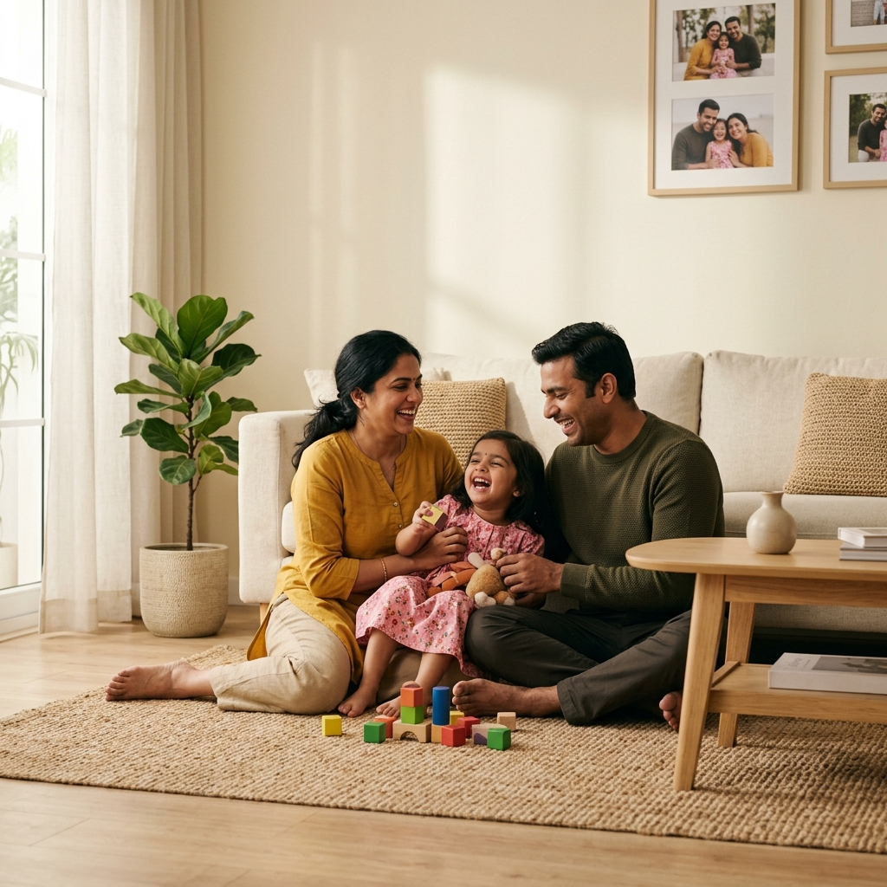
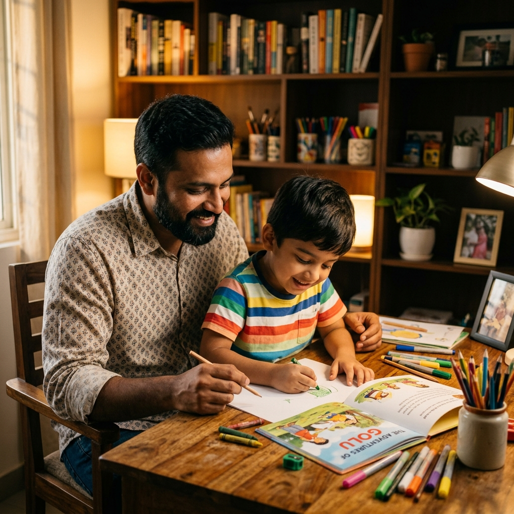
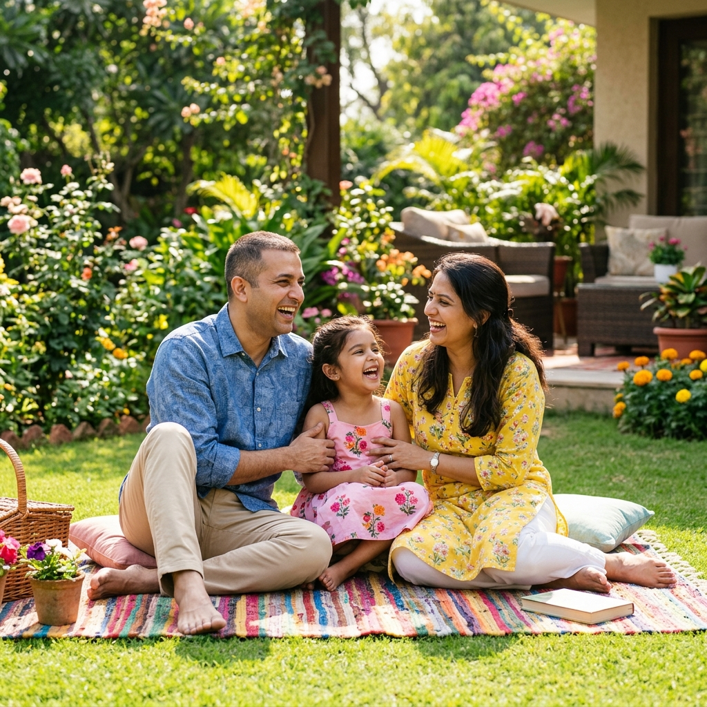

പാരന്റിംഗ് മാസ്റ്റർക്ലാസ്സ്:
കളിച്ചിരികളിൽ നിന്ന് സ്വഭാവ രൂപീകരണത്തിലേക്ക്
പുതിയ കാലഘട്ടത്തിലെ കുട്ടികളുടെ മനശ്ശാസ്ത്രം മനസ്സിലാക്കാനും അവരെ സ്നേഹത്തോടെയും അച്ചടക്കത്തോടെയും വളർത്താനും സഹായിക്കുന്ന വഴികാട്ടി. A guide to understanding modern child psychology and raising children with love and positive discipline.
4-മണിക്കൂർ ക്ലാസ്സ് ഘടന
4-Hour Masterclass Roadmapകുട്ടികളെ സ്നേഹത്തോടെയും അച്ചടക്കത്തോടെയും വളർത്തുന്നതിനുള്ള പ്രധാന അധ്യായങ്ങൾ താഴെ പറയുന്ന രീതിയിൽ ക്രമീകരിച്ചിരിക്കുന്നു.
കുട്ടികളുടെ പെരുമാറ്റം മനസ്സിലാക്കുക, വികാരങ്ങൾ തിരിച്ചറിയൽ, സഹാനുഭൂതിയും പിന്തുണയും. Child development, identifying emotions, empathy.
അച്ചടക്കം സ്നേഹത്തിലൂടെ, ശിക്ഷയ്ക്ക് പകരം പോസിറ്റീവ് റീഡയറക്ഷൻ, അതിരുകൾ നിശ്ചയിക്കൽ. Positive discipline, boundaries, role modeling.
കുട്ടികളുമായുള്ള ആത്മബന്ധം, 5 സ്നേഹഭാഷകൾ, തുറന്ന ആശയвиനിമയം. Emotional connect, 5 love languages of children.
ഡിജിറ്റൽ യുഗത്തിലെ പേരന്റിംഗ്, സ്ക്രീൻ ടൈം റൂൾസ്, പേരന്റിംഗ് സമവാക്യവും ചെക്ക്ലിസ്റ്റും. Digital-age parenting, screen rules, checklist.
കുട്ടികളുടെ വികാസവും പെരുമാറ്റങ്ങളും
Understanding Child Behavior & Developmentകുട്ടികളുടെ പെരുമാറ്റങ്ങൾ വെറുമൊരു ശാഠ്യമല്ല, മറിച്ച് തങ്ങളുടെ വികാരങ്ങൾ പ്രകടിപ്പിക്കാനുള്ള അവരുടെ ശ്രമമാണ്. ഇത് തിരിച്ചറിയുകയാണ് നല്ല പേരന്റിംഗിന്റെ ഒന്നാമത്തെ പടി. Understanding that behavior is a form of communication is the first step in empathetic parenting.
മുൻവിധികളില്ലാതെ കാണുക
കുട്ടികളുടെ ഭാഗത്തുനിന്നു ചിന്തിച്ച് അവരുടെ പ്രവർത്തികൾക്ക് പിന്നിലെ യഥാർത്ഥ കാരണം കണ്ടെത്തുക.

കുട്ടികളുടെ വികാരങ്ങൾ തിരിച്ചറിയൽ
Identifying Children's Emotional Statesതാഴെയുള്ള വിവിധ വൈകാരിക അവസ്ഥകളിൽ ക്ലിക്ക് ചെയ്തു അവ കൈകാര്യം ചെയ്യേണ്ട രീതികൾ മനസ്സിലാക്കുക.
1. വാശി / ശാഠ്യം
Tantrums / Crying2. മൗനം / പേടി
Silence / Withdrawal3. ജിജ്ഞാസ
Curiosity / Questions4. അമിത സന്തോഷം
High Energy / Excitementവാശി / ശാഠ്യം (Tantrums)
കുട്ടി അമിതമായി കരയുമ്പോഴും വാശി പിടിക്കുമ്പോഴും വഴക്കുപറയാതെ അവരെ ചേർത്തുപിടിച്ച് ശാന്തരാക്കുക. അവരോടൊപ്പം ഇരുന്ന് 'അമ്മ/അച്ഛൻ കൂടെയുണ്ട്' എന്ന സുരക്ഷിതത്വം നൽകുകയാണ് ആവശ്യം.
Avoid yelling when a child has a tantrum. Instead, practice co-regulation. Stay close and provide a calming presence to help them regulate their emotions.
ബഹളങ്ങളും വാശിയും കൈകാര്യം ചെയ്യൽ
De-escalating Tantrums and Meltdownsകുട്ടികളുടെ ഉള്ളിലെ വൈകാരിക തരംഗം അടങ്ങാൻ അവരുടെ തലച്ചോറിന് സമയം ആവശ്യമുണ്ട്. ഇതിനെ **Co-Regulation** എന്ന് വിളിക്കുന്നു. Co-regulation is the process where a parent's calm presence helps soothe the child's nervous system.
ആദ്യം നമ്മൾ ശാന്തരാവുക
നമ്മൾ ദേഷ്യപ്പെടുമ്പോൾ കുട്ടിയുടെ ഉള്ളിലെ ഭയം വർദ്ധിക്കുകയേ ഉള്ളൂ. ആദ്യം സ്വന്തം ദേഷ്യം നിയന്ത്രിക്കുക.
ലളിതമായ നിർദ്ദേശങ്ങൾ നൽകുക
വാശി പിടിക്കുന്ന നിമിഷത്തിൽ വലിയ ഉപദേശങ്ങൾ ഒഴിവാക്കി ചെറിയ ആലിംഗനങ്ങളോ സാന്ത്വന വാക്കുകളോ നൽകുക.
അറിയേണ്ട പ്രധാന സംഗതി
Parental Calm is Contagiousകുട്ടി ബഹളം വെക്കുമ്പോൾ നമ്മൾ ഉച്ചത്തിൽ സംസാരിച്ചാൽ അതൊരു പോരാട്ടമായി മാറും. നമ്മുടെ താഴ്ന്ന ശബ്ദവും ശാന്തതയും കുട്ടിയുടെ ശാഠ്യത്തെ സാവധാനം ഇല്ലാതാക്കും.
Yelling back at a screaming child only creates a power struggle. A low, calm tone shows that you are in control, helping them feel safe to calm down.
സഹാനുഭൂതിയും സുരക്ഷിതത്വവും
Building Empathy and Psychological Safetyകുട്ടികൾക്ക് തങ്ങളുടെ വികാരങ്ങൾ പങ്കുവെക്കാൻ കഴിയുന്ന സുരക്ഷിതമായ അന്തരീക്ഷം വീട്ടിൽ സൃഷ്ടിക്കുക. Creating safety allows children to express failures and fears without fear of immediate rejection or punishment.
വികാരങ്ങളെ വിലകുറച്ചു കാണരുത്
ചെറിയ കളിപ്പാട്ടം നഷ്ടപ്പെടുമ്പോൾ കുട്ടി കരയുന്നത് വലിയ നഷ്ടമായി കണ്ടാണ്. അവരോടൊപ്പം സങ്കടം പങ്കിടുക.
തുറന്ന ചർച്ചകൾ
തെറ്റുകൾ സംഭവിക്കുമ്പോൾ വഴക്കുപറയാതെ 'ഇതിൽ നിന്ന് നമുക്ക് എന്ത് പഠിക്കാം' എന്ന് സൗമ്യമായി ചോദിക്കുക.
സുവർണ്ണ വാക്യം
Connection Before Correctionകുട്ടിയുടെ പെരുമാറ്റം തിരുത്തുന്നതിനേക്കാൾ മുൻപ് അവരുമായി വൈകാരിക ബന്ധം স্থাপনിക്കുക. മനസ്സിലാക്കുന്ന ഒരു രക്ഷിതാവിനെ മാത്രമേ കുട്ടി അനുസരിക്കുകയുള്ളൂ.
Connect with your child before correcting their behavior. A child is more likely to listen and cooperate when they feel understood and valued.
അച്ചടക്കം സ്നേഹത്തിലൂടെ
Positive Discipline & Guidanceഅച്ചടക്കം എന്നാൽ ഭയപ്പെടുത്തലോ ശിക്ഷയോ അല്ല, പകരം സ്നേഹത്തിലൂടെ സ്വയം നിയന്ത്രിക്കാൻ കുട്ടികളെ പഠിപ്പിക്കലാകുന്നു. Discipline is not about punishment; it is about teaching children self-regulation and boundaries through love.
ആരോഗ്യകരമായ മാർഗ്ഗനിർദ്ദേശം
അരുതുകൾ മാത്രം പറയുന്നതിന് പകരം ചെയ്യേണ്ട ശരിയായ കാര്യങ്ങൾ നിർദ്ദേശിക്കുക.

ശിക്ഷയ്ക്ക് പകരം പോസിറ്റീവ് റീഡയറക്ഷൻ
Positive Redirection vs Punishmentകുട്ടികളുടെ ഭാഗത്തുനിന്ന് അബദ്ധങ്ങൾ സംഭവിക്കുമ്പോൾ ഉച്ചത്തിൽ ബഹളം വെക്കാതെ ശരിയായ വഴിയിലേക്ക് അവരെ ശ്രദ്ധ തിരിക്കുക. Redirect their focus to the desired positive behavior instead of reacting negative.
ശ്രദ്ധ മാറ്റുക
അപകടകരമായ കളികളിൽ ഏർപ്പെടുമ്പോൾ അതേക്കാൾ കൗതുകമുള്ള മറ്റൊരു കളി നിർദ്ദേശിക്കുക.
സംഭാഷണത്തിലെ വ്യത്യാസം
Reframing Your Words"ഇവിടെ ഓടി നടക്കരുത്, മിണ്ടാതിриക്ക്!" "Stop running and sit quietly!"
"നമുക്ക് പതിയെ നടക്കാം, അല്ലെങ്കിൽ വീഴും." "Let's walk gently so we stay safe."
ആരോഗ്യകരമായ അതിരുകൾ നിശ്ചയിക്കൽ
Setting Healthy Routines & Boundariesകുട്ടികൾക്ക് ദിനചര്യകളിൽ വ്യക്തത നൽകുക. ഇത് അവരുടെ ഭയം കുറയ്ക്കുകയും ഉത്തരവാദിത്തം വർദ്ധിപ്പിക്കുകയും ചെയ്യും. Clear routines create emotional predictability, making children more cooperative.
ദിനചര്യകൾ (Routines)
ഉറങ്ങുന്ന സമയം, പഠിക്കുന്ന സമയം, കളിക്കുന്ന സമയം എന്നിവ കൃത്യമായി പാലിക്കാൻ അവരെ സഹായിക്കുക.
മുൻകൂട്ടി പറയുക (Advanced Warning)
"5 മിനിറ്റിനുള്ളിൽ കളി നിർത്തി നമ്മൾ ഭക്ഷണം കഴിക്കും" എന്ന് മുൻകൂട്ടി പറയുന്നത് ശാഠ്യം കുറയ്ക്കും.
സ്ഥിരതയുടെ പ്രാധാന്യം
Consistency is Keyഅതിരുകൾ നിശ്ചയിക്കുമ്പോൾ ദമ്പതികൾ രണ്ടുപേരും ഒരേ നിലപാട് സ്വീകരിക്കുക. ഒരാൾ വിലക്കുന്ന കാര്യം മറ്റേയാൾ പ്രോത്സാഹിപ്പിച്ചാൽ കുട്ടി ആശയക്കുഴപ്പത്തിലാകും.
Ensure consistency in parental guidelines. If parents disagree on rules in front of the child, the child learns to exploit the disagreement.
固定 അതിരുകൾ (Role Modeling)
സ്വയം നിയന്ത്രണവും മാതൃകയും
Parental Self-Regulation & Role Modelingകുട്ടികൾ കേൾക്കുന്നതിനേക്കാൾ വേഗത്തിൽ നമ്മൾ ചെയ്യുന്നത് കണ്ട് പഠിക്കുന്നു. നമ്മുടെ പെരുമാറ്റമാണ് അവരുടെ ഒന്നാമത്തെ സിലബസ്. Children mirror parents. Your own reactions to stress are their primary emotional blueprint.
വീട്ടിലെ സംസാരം
ദമ്പതികൾ വീട്ടിൽ ബഹുമാനത്തോടെ സംസാരിക്കുന്നത് കാണുമ്പോൾ കുട്ടി സ്വഭാവികമായും മറ്റുള്ളവരെ ബഹുമാനിക്കാൻ പഠിക്കുന്നു.
ദേഷ്യത്തിൽ നിയന്ത്രണം
പ്രതിസന്ധികളിൽ നമ്മൾ നിയന്ത്രണം കൈവിടാതെ പ്രതികരിക്കുമ്പോൾ അവരും ആ സ്വഭാവരീതി വളർത്തിയെടുക്കും.
അറിയേണ്ട പ്രായോഗിക സത്യം
Actions Speak Louder Than Wordsകുട്ടികളോട് ഫോൺ ഉപയോഗിക്കരുത് എന്ന് ഉച്ചത്തിൽ ഉപദേശിക്കുന്നതിനേക്കാൾ പ്രധാനം നമ്മൾ അവരുടെ മുൻപിൽ ഫോൺ ഉപയോഗം പരിമിതപ്പെടുത്തുന്നതാകുന്നു.
Limiting your own screen time in front of your children is far more effective than repeatedly lecturing them about the dangers of device addiction.
കുട്ടികളുമായുള്ള ആത്മബന്ധം
Deepening the Emotional Connectionവൈകാരിക ബന്ധം ശക്തമാകുമ്പോഴാണ് കുട്ടികൾ കാര്യങ്ങൾ പങ്കുവെക്കാനും മാതാപിതാക്കളെ അനുസരിക്കാനും തയ്യാറാകുന്നത്. A strong emotional attachment forms the security base from which kids explore the world with confidence.
വൈകാരിക പിന്തുണ (Emotional Connect)
കുട്ടിയുടെ ആവശ്യങ്ങളോട് കൃത്യസമയത്ത് പ്രതികരിക്കുകയും സ്നേഹം വാക്കുകളിലൂടെയും പ്രവൃത്തിയിലൂടെയും കാട്ടുക.

കുട്ടികളുടെ 5 സ്നേഹഭാഷകൾ
The 5 Love Languages of Childrenകുട്ടികൾ അവരുടെ സ്നേഹം സ്വീകരിക്കുന്ന വിവിധ സ്നേഹഭാഷകളിൽ ക്ലിക്ക് ചെയ്തു വിശദമായി കാണുക.
1. അഭിനന്ദന വാക്കുകൾ
Words of Affirmation2. ഗുണനിലവാരമുള്ള സമയം
Quality Time3. സമ്മാനങ്ങൾ നൽകൽ
Receiving Gifts4. സ്നേഹസ്പർശനം
Physical Touchഅഭിനന്ദന വാക്കുകൾ (Words of Affirmation)
കുട്ടികളുടെ ചെറിയ നേട്ടങ്ങളെപ്പോലും പ്രോത്സാഹിപ്പിച്ചു സംസാരിക്കുക. "മോൻ ഇന്ന് നന്നായി കളിപ്പാട്ടങ്ങൾ ഒതുക്കിവെച്ചു, അമ്മയ്ക്ക് ഒരുപാട് ഇഷ്ടമായി" എന്ന വാചകങ്ങൾ അവരുടെ ആത്മവിശ്വാസം വളർത്തും.
Praise their specific efforts. Expressions like "I loved how beautifully you put away your toys today" build positive self-esteem and encourage healthy behaviors.
കുട്ടികളോട് സംസാരിക്കേണ്ട രീതി
Talking so Kids Will Listen & Listen so Kids Will Talkകുട്ടികളുടെ ഉയരത്തിലേക്ക് താഴെ ഇരുന്ന് സംസാരിക്കുമ്പോൾ അവർ നിങ്ങളെ കൂടുതൽ ബഹുമാനത്തോടെ കാണുന്നു. Eye-level communication signals to the child that they are important and their voices are valued.
കണ്ണ് നോക്കുക (Eye Contact)
അവരുടെ തലത്തിലേക്ക് താണിരുന്ന് മുഖത്തേക്ക് നോക്കി സ്നേഹത്തോടെ സംസാരിക്കുക.
തുറന്ന ചോദ്യങ്ങൾ ചോദിക്കുക
'മോൻ ഇന്ന് ഹാപ്പിയായിരുന്നോ' എന്നതിന് പകരം 'ഇന്ന് സ്കൂളിൽ ഏറ്റവും രസകരമായ കാര്യം എന്തായിരുന്നു' എന്ന് ചോദിക്കുക.
ശ്രദ്ധയോടെ കേൾക്കൽ
Undivided Attentionകുട്ടികൾ സംസാരിക്കുമ്പോൾ നമ്മൾ പകുതി ശ്രദ്ധ മൊബൈലിൽ നൽകി സംസാരിച്ചാൽ അവർ നമ്മളിൽ നിന്നും ഉൾവലിയാൻ സാധ്യതയുണ്ട്. ദിവസവും 15 മിനിറ്റെങ്കിലും മൊബൈലില്ലാതെ അവരുടെ കാര്യങ്ങൾ മാത്രം ചോദിച്ചറിയാൻ നീക്കിവെക്കുക.
If a parent is constantly distracted by their phone while listening, the child feels undervalued. Dedicate at least 15 minutes of uninterrupted conversation time daily.
ഡിജിറ്റൽ യുഗത്തിലെ പേരന്റിംഗ്
Screen Time Rules & Balancesകുട്ടികളുടെ ശാരീരിക-മാനസിക വളർച്ചയ്ക്ക് ആവശ്യമായ ആരോഗ്യകരമായ സമയം വിഭജിക്കുന്ന ഡോനട്ട് ചാർട്ട് താഴെ കാണാം.
ഓപ്പൺ കളി / വ്യായാമം
Active Play & Exerciseഫോണുകളും ടിവികളും പൂർണ്ണമായി ഒഴിവാക്കി പുറത്തു പോയി ഓടി കളിക്കാനും മറ്റുള്ള കുട്ടികളുമായി ഇടപഴകാനും ഉള്ള സമയം. ഇത് അവരുടെ സാമൂഹിക വളർച്ചയെ സഹായിക്കുന്നു.
പ്രതിവാര പാരന്റിംഗ് ചെക്ക്ലിസ്റ്റ്
Weekly Parenting Checklist & Habitsദിനചര്യകളിൽ ചില നല്ല ശീലങ്ങൾ വളർത്തിയെടുക്കുന്നത് സന്തോഷകരമായ ഒരു കുടുംബ പശ്ചാത്തലം ഒരുക്കാൻ സഹായിക്കും.
| ✓ | പ്രവർത്തി (Action Item) | ലക്ഷ്യം (Goal) |
|---|---|---|
| പ്രത്യേക സമയം (One-on-One time) | ആഴ്ചയിൽ ഒരിക്കൽ കുട്ടിക്ക് മാത്രമായി സമയം നൽകുക. | |
| സ്ക്രീൻ ഫ്രീ ഫാമിലി ഡിന്നർ | ഫോണുകൾ പൂർണ്ണമായി മാറ്റിവെച്ചു ഒരുമിച്ച് ഭക്ഷണം കഴിക്കുക. | |
| അഭിനന്ദനങ്ങൾ നൽകുക | ആഴ്ചയിൽ 3 തവണയെങ്കിലും അവരെ നല്ല പ്രവർത്തികൾക്ക് പുകഴ്ത്തുക. | |
| പ്രതിവാര ഫാമിലി മീറ്റിംഗ് | കുട്ടികളുടെ ആവശ്യങ്ങളും സന്തോഷങ്ങളും ചോദിച്ചറിയുക. |